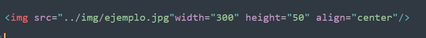

Al principio, la web solo era texto y resultaba más bien aburrido. Afortunadamente, no pasó mucho tiempo antes de que se añadiera la capacidad de insertar imágenes (y otros tipos de contenido más interesantes) en las páginas web. Hay otros tipos de elementos multimedia que tener en cuenta, pero es lógico comenzar con el humilde elemento  utilizado para insertar una imagen simple en una página web. En este artículo, veremos en detalle cómo usar este elemento, incluidos sus conceptos básicos y cómo añadir pies de imagen usando y explicaremos cómo se relaciona con las imágenes de fondo en CSS.
utilizado para insertar una imagen simple en una página web. En este artículo, veremos en detalle cómo usar este elemento, incluidos sus conceptos básicos y cómo añadir pies de imagen usando y explicaremos cómo se relaciona con las imágenes de fondo en CSS.
¿Cómo ponemos una imagen en una página web?
¿Cómo ponemos una imagen en una página web?
Para poner una imagen simple en una página web, utilizamos el elemento  . Se trata de un elemento vacío (lo que significa que no contiene texto o etiqueta de cierre) que requiere de por lo menos de un atributo para ser utilizado: src (a veces denominado por su nombre completo, source). El atributo src contiene una ruta que apunta a la imagen que quieres poner en la página, que puede ser una URL relativa o absoluta, de la misma forma que el elemento contiene los valores del atributo href..
. Se trata de un elemento vacío (lo que significa que no contiene texto o etiqueta de cierre) que requiere de por lo menos de un atributo para ser utilizado: src (a veces denominado por su nombre completo, source). El atributo src contiene una ruta que apunta a la imagen que quieres poner en la página, que puede ser una URL relativa o absoluta, de la misma forma que el elemento contiene los valores del atributo href..
Este sería un ejemplo de como se pone la imagen y abajo la imagen.
